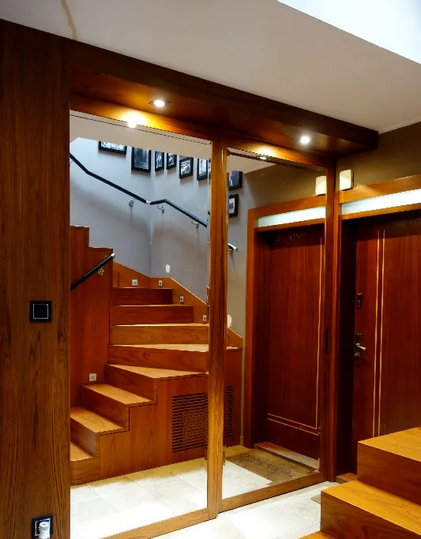

Realizacje z naszej pracowni
83 zdjęć mebli wykonanych na wymiar. Przesuń galerię palcem lub myszą, kliknij zdjęcie, aby je powiększyć.
Kuchnie na wymiar
Nowoczesne wyspy, klasyczne fronty ramowe, blaty z kamienia i panele ze szkła.
1 / 19
Szafy, garderoby i zabudowy
Pod skosem, pod schodami i we wnękach, z oświetleniem i wygodnym wnętrzem.
1 / 17
Zabudowy salonu i RTV
Ściany RTV, witryny i komody, od klasycznych po nowoczesne.
1 / 8
Łazienki
Szafki podumywalkowe, zabudowy pralek, toaletki i lustra w ramach.
1 / 5
Schody, drzwi i okładziny
Drzwi wewnętrzne przylgowe i bezprzylgowe, schody i ściany wykończone drewnem.
1 / 13
Meble tapicerowane i sypialnie
Łóżka z tapicerowanym zagłówkiem, siedziska, panele ścienne i szafki nocne.
1 / 11
Stoły i blaty
Blaty z drewna na stalowych podstawach, stoły do jadalni i stoliki.
1 / 7
Biblioteki i regały
Regały na książki, biblioteki domowe i podświetlane wnęki.
1 / 3
Masz wymiary albo projekt? Przygotujemy wycenę.